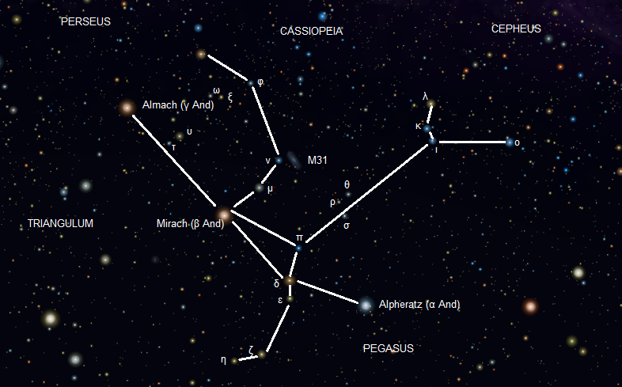
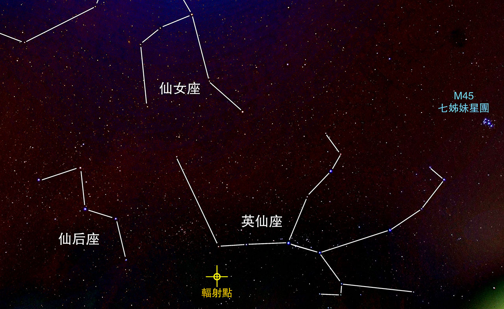
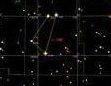

仙女座
仙王座與仙后座的女兒，被作為祭品獻給大海怪。後被珀耳修斯所救仙逝後宙斯將其一干人等提升為星座。

英仙座
珀耳修斯，旅行途中巧遇安德洛墨達正要被獻祭給海怪。費了一番力氣後擊破海怪並拯救安德洛墨達，並且娶她為妻。後提升為星座。

白羊座
希臘占星術中的白羊座代表名叫克律索馬羅斯的公羊，在希臘神話中遵照赫耳墨斯的命令拯救佛里克索斯（Φρίξος）和赫勒 ，並把佛里克索斯帶到科爾基斯。佛里克索斯和赫勒是阿塔瑪斯（Αθάμας）國王和原配王后涅斐勒的孩子， 第二任王后伊諾出於妒忌想要殺死前任的孩子。

水瓶座
這位少年是住在特羅耶的卡尼米第。大神謝恩斯因激賞他的美麗光輝，於是把他召來天上， 讓他在眾神宴會上服務。他手持的水瓶中經常裝滿著英智之源的飲料而取之不盡，用之不完。
小馬座
傳說小馬就是奧林匹斯諸神的信使赫爾墨斯贈送給孿生英雄卡斯托爾的名馬克勒利斯。
